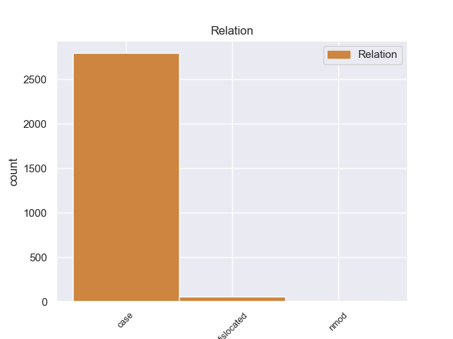
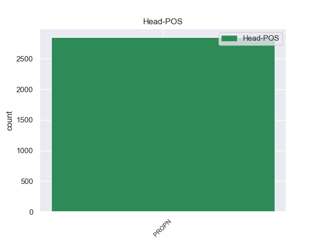
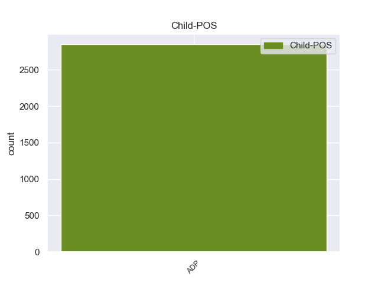

Distribution of features within this leaf



Agreement Rules sorted by frequency.
- When the dependent token is the case marking(case) of the head token, and the head token is PROPN and the dependent token is ADP.
1 उन्होंने _ _ _ _ 0 _ _ _
2 यहां _ _ _ _ 0 _ _ _
3 वेटिकन _ _ _ _ 0 _ _ _
4 दूतावास _ _ _ _ 0 _ _ _
5 में _ _ _ _ 0 _ _ _
6 एक _ _ _ _ 0 _ _ _
7 शोक _ _ _ _ 0 _ _ _
8 पुस्तिका _ _ _ _ 0 _ _ _
9 पर _ _ _ _ 0 _ _ _
10 हस्ताक्षर _ _ _ _ 0 _ _ _
11 कर _ _ _ _ 0 _ _ _
12 पोप _ _ _ _ 0 _ _ _
13 जॉन _ _ _ _ 0 _ _ _
14 पॉल _ _ _ _ 0 _ _ _
15 द्वितीय द्वितीय PROPN NNP Case=Acc|Gender=Masc|Number=Sing|Person=3 0 _ _ _
16 के का ADP PSP AdpType=Post|Case=Acc|Gender=Masc|Number=Sing 15 case _ ChunkId=NP6|ChunkType=child|Translit=ke
17 निधन _ _ _ _ 0 _ _ _
18 पर _ _ _ _ 0 _ _ _
19 गहरा _ _ _ _ 0 _ _ _
20 दुख _ _ _ _ 0 _ _ _
21 प्रकट _ _ _ _ 0 _ _ _
22 किया _ _ _ _ 0 _ _ _
23 । _ _ _ _ 0 _ _ _
1 मुंबई _ _ _ _ 0 _ _ _
2 में _ _ _ _ 0 _ _ _
3 सेंटॉर _ _ _ _ 0 _ _ _
4 होटलों _ _ _ _ 0 _ _ _
5 की _ _ _ _ 0 _ _ _
6 बिक्री _ _ _ _ 0 _ _ _
7 के _ _ _ _ 0 _ _ _
8 मामले _ _ _ _ 0 _ _ _
9 में _ _ _ _ 0 _ _ _
10 नियंत्रक _ _ _ _ 0 _ _ _
11 एवं _ _ _ _ 0 _ _ _
12 महालेखा _ _ _ _ 0 _ _ _
13 परीक्षक परीक्षक PROPN NNP Case=Acc|Gender=Masc|Number=Sing|Person=3 0 _ _ _
14 ( _ _ _ _ 0 _ _ _
15 कैग _ _ _ _ 0 _ _ _
16 ) _ _ _ _ 0 _ _ _
17 की का ADP PSP AdpType=Post|Case=Nom|Gender=Fem|Number=Sing 13 dislocated _ ChunkId=FRAGP|ChunkType=head|Translit=kī
18 रिपोर्ट _ _ _ _ 0 _ _ _
19 एक _ _ _ _ 0 _ _ _
20 बड़ा _ _ _ _ 0 _ _ _
21 विवाद _ _ _ _ 0 _ _ _
22 खड़ा _ _ _ _ 0 _ _ _
23 कर _ _ _ _ 0 _ _ _
24 सकती _ _ _ _ 0 _ _ _
25 है _ _ _ _ 0 _ _ _
26 । _ _ _ _ 0 _ _ _
1 सिक्किम _ _ _ _ 0 _ _ _
2 प्रदेश _ _ _ _ 0 _ _ _
3 कांग्रेस _ _ _ _ 0 _ _ _
4 कमेटी कमेटी PROPN NNP Case=Acc|Gender=Fem|Number=Sing|Person=3 0 _ _ _
5 ( _ _ _ _ 0 _ _ _
6 एसपीसीसी _ _ _ _ 0 _ _ _
7 ) _ _ _ _ 0 _ _ _
8 के का ADP PSP AdpType=Post|Case=Acc|Gender=Masc|Number=Sing 4 nmod _ ChunkId=FRAGP|ChunkType=head|Translit=ke
9 उपाध्यक्ष _ _ _ _ 0 _ _ _
10 मेजर _ _ _ _ 0 _ _ _
11 टी. _ _ _ _ 0 _ _ _
12 ग्यात्सो _ _ _ _ 0 _ _ _
13 ने _ _ _ _ 0 _ _ _
14 पत्रकारों _ _ _ _ 0 _ _ _
15 से _ _ _ _ 0 _ _ _
16 बातचीत _ _ _ _ 0 _ _ _
17 में _ _ _ _ 0 _ _ _
18 कहा _ _ _ _ 0 _ _ _
19 कि _ _ _ _ 0 _ _ _
20 राज्य _ _ _ _ 0 _ _ _
21 में _ _ _ _ 0 _ _ _
22 पंचायती _ _ _ _ 0 _ _ _
23 राज _ _ _ _ 0 _ _ _
24 प्रणाली _ _ _ _ 0 _ _ _
25 की _ _ _ _ 0 _ _ _
26 तारीफ _ _ _ _ 0 _ _ _
27 करने _ _ _ _ 0 _ _ _
28 के _ _ _ _ 0 _ _ _
29 कारण _ _ _ _ 0 _ _ _
30 पार्टी _ _ _ _ 0 _ _ _
31 की _ _ _ _ 0 _ _ _
32 कार्यकारी _ _ _ _ 0 _ _ _
33 समिति _ _ _ _ 0 _ _ _
34 ने _ _ _ _ 0 _ _ _
35 अय्यर _ _ _ _ 0 _ _ _
36 के _ _ _ _ 0 _ _ _
37 कार्यक्रमों _ _ _ _ 0 _ _ _
38 का _ _ _ _ 0 _ _ _
39 बहिष्कार _ _ _ _ 0 _ _ _
40 करने _ _ _ _ 0 _ _ _
41 का _ _ _ _ 0 _ _ _
42 निर्णय _ _ _ _ 0 _ _ _
43 लिया _ _ _ _ 0 _ _ _
44 है _ _ _ _ 0 _ _ _
45 । _ _ _ _ 0 _ _ _
Disagree Examples:
1 यहाँ _ _ _ _ 0 _ _ _
2 आदिवासी _ _ _ _ 0 _ _ _
3 , _ _ _ _ 0 _ _ _
4 समुद्र _ _ _ _ 0 _ _ _
5 किनारे _ _ _ _ 0 _ _ _
6 , _ _ _ _ 0 _ _ _
7 रेगिस्तान _ _ _ _ 0 _ _ _
8 और _ _ _ _ 0 _ _ _
9 हिमालय हिमालय PROPN NNP Case=Acc|Gender=Masc|Number=Sing|Person=3 0 _ _ _
10 के का ADP PSP AdpType=Post|Case=Acc|Gender=Masc|Number=Plur 9 case _ ChunkId=NP5|ChunkType=child|Translit=ke
11 आवासों _ _ _ _ 0 _ _ _
12 के _ _ _ _ 0 _ _ _
13 नमूने _ _ _ _ 0 _ _ _
14 भी _ _ _ _ 0 _ _ _
15 बनाए _ _ _ _ 0 _ _ _
16 गए _ _ _ _ 0 _ _ _
17 हैं _ _ _ _ 0 _ _ _
18 । _ _ _ _ 0 _ _ _
1 यहाँ _ _ _ _ 0 _ _ _
2 मध्य _ _ _ _ 0 _ _ _
3 प्रदेश प्रदेश PROPN NNP Case=Acc|Gender=Masc|Number=Sing|Person=3 0 _ _ _
4 के का ADP PSP AdpType=Post|Case=Acc|Gender=Masc|Number=Plur 3 case _ ChunkId=NP2|ChunkType=child|Translit=ke
5 विभिन्न _ _ _ _ 0 _ _ _
6 हिस्सों _ _ _ _ 0 _ _ _
7 से _ _ _ _ 0 _ _ _
8 कला _ _ _ _ 0 _ _ _
9 के _ _ _ _ 0 _ _ _
10 खूबसूरत _ _ _ _ 0 _ _ _
11 नमूने _ _ _ _ 0 _ _ _
12 एकत्रित _ _ _ _ 0 _ _ _
13 करके _ _ _ _ 0 _ _ _
14 रखे _ _ _ _ 0 _ _ _
15 गए _ _ _ _ 0 _ _ _
16 हैं _ _ _ _ 0 _ _ _
17 । _ _ _ _ 0 _ _ _
1 मालवा मालवा PROPN NNP Case=Acc|Gender=Masc|Number=Sing|Person=3 0 _ _ _
2 के का ADP PSP AdpType=Post|Case=Acc|Gender=Masc|Number=Plur 1 case _ ChunkId=NP|ChunkType=child|Translit=ke
3 शासकों _ _ _ _ 0 _ _ _
4 ने _ _ _ _ 0 _ _ _
5 16वीं _ _ _ _ 0 _ _ _
6 शताब्दी _ _ _ _ 0 _ _ _
7 में _ _ _ _ 0 _ _ _
8 अपना _ _ _ _ 0 _ _ _
9 राज _ _ _ _ 0 _ _ _
10 जमाया _ _ _ _ 0 _ _ _
11 । _ _ _ _ 0 _ _ _
1 प्राकृतिक _ _ _ _ 0 _ _ _
2 सुंदरता _ _ _ _ 0 _ _ _
3 से _ _ _ _ 0 _ _ _
4 भरपूर _ _ _ _ 0 _ _ _
5 इस _ _ _ _ 0 _ _ _
6 शहर _ _ _ _ 0 _ _ _
7 में _ _ _ _ 0 _ _ _
8 आप _ _ _ _ 0 _ _ _
9 स्विट्जरलैंड स्विट्जरलैंड PROPN NNP Case=Acc|Gender=Masc|Number=Sing|Person=3 0 _ _ _
10 के का ADP PSP AdpType=Post|Case=Acc|Gender=Masc|Number=Plur 9 case _ ChunkId=NP4|ChunkType=child|Translit=ke
11 इतिहास _ _ _ _ 0 _ _ _
12 और _ _ _ _ 0 _ _ _
13 वर्तमान _ _ _ _ 0 _ _ _
14 दोनों _ _ _ _ 0 _ _ _
15 से _ _ _ _ 0 _ _ _
16 मुलाकात _ _ _ _ 0 _ _ _
17 कर _ _ _ _ 0 _ _ _
18 सकते _ _ _ _ 0 _ _ _
19 हैं _ _ _ _ 0 _ _ _
20 । _ _ _ _ 0 _ _ _
1 इस _ _ _ _ 0 _ _ _
2 फिल्म _ _ _ _ 0 _ _ _
3 में _ _ _ _ 0 _ _ _
4 डिज़नी डिज़नी PROPN NNP Case=Acc|Gender=Masc|Number=Sing|Person=3 0 _ _ _
5 के का ADP PSP AdpType=Post|Case=Acc|Gender=Masc|Number=Plur 4 case _ ChunkId=NP2|ChunkType=child|Translit=ke
6 क्लासिकल _ _ _ _ 0 _ _ _
7 गानों _ _ _ _ 0 _ _ _
8 और _ _ _ _ 0 _ _ _
9 कार्टून _ _ _ _ 0 _ _ _
10 कैरक्टरों _ _ _ _ 0 _ _ _
11 के _ _ _ _ 0 _ _ _
12 संवादों _ _ _ _ 0 _ _ _
13 को _ _ _ _ 0 _ _ _
14 मिलाकर _ _ _ _ 0 _ _ _
15 दिलचस्प _ _ _ _ 0 _ _ _
16 फिल्म _ _ _ _ 0 _ _ _
17 दिखाई _ _ _ _ 0 _ _ _
18 जाती _ _ _ _ 0 _ _ _
19 है _ _ _ _ 0 _ _ _
20 । _ _ _ _ 0 _ _ _